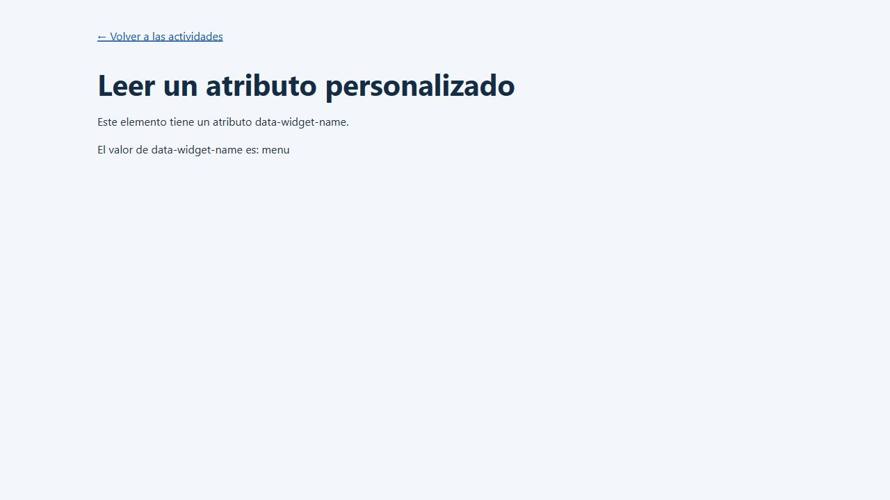
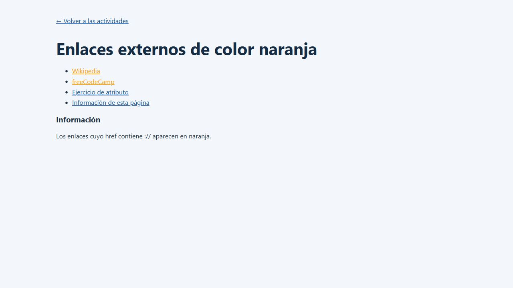
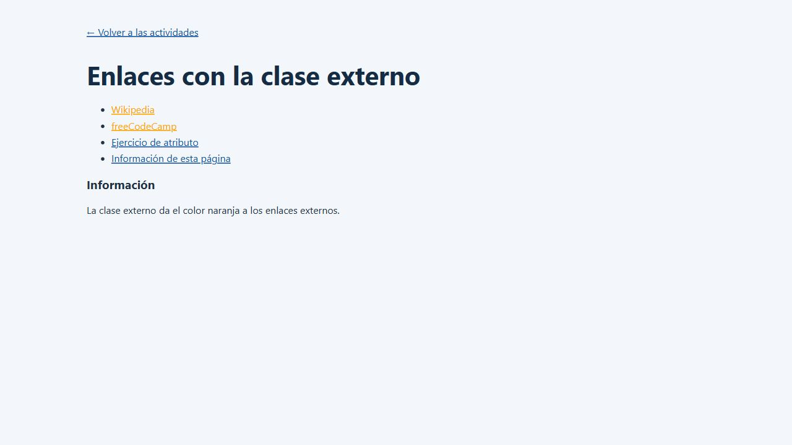
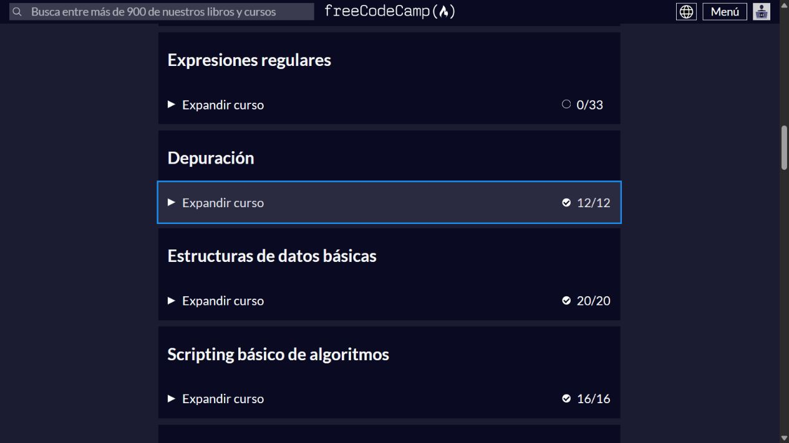
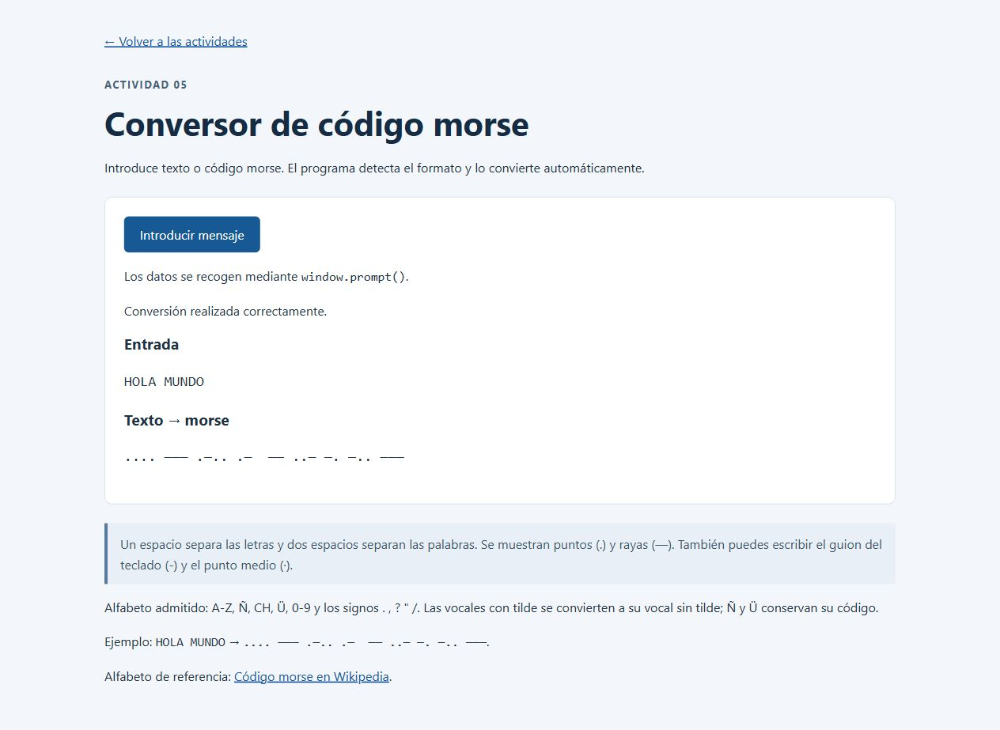
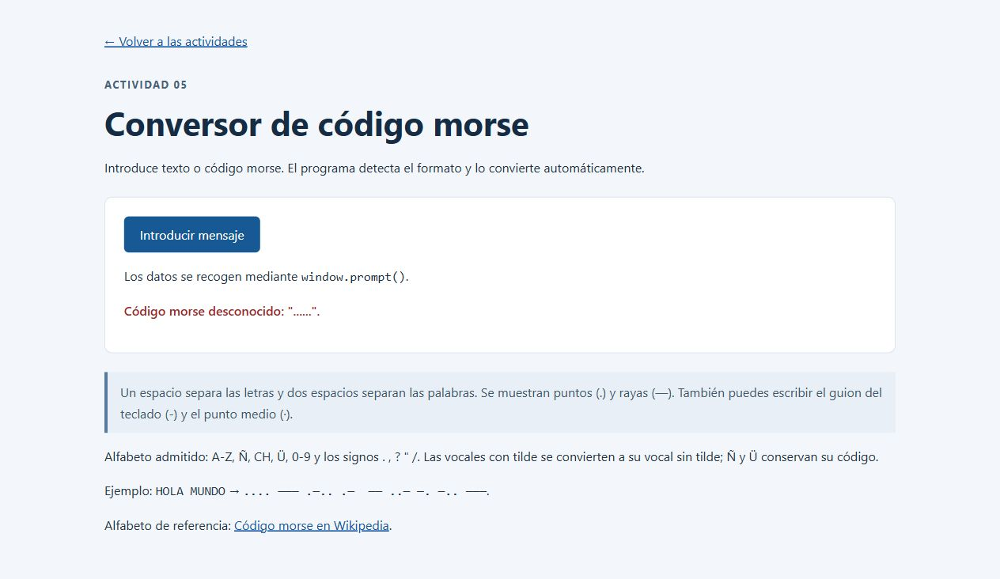
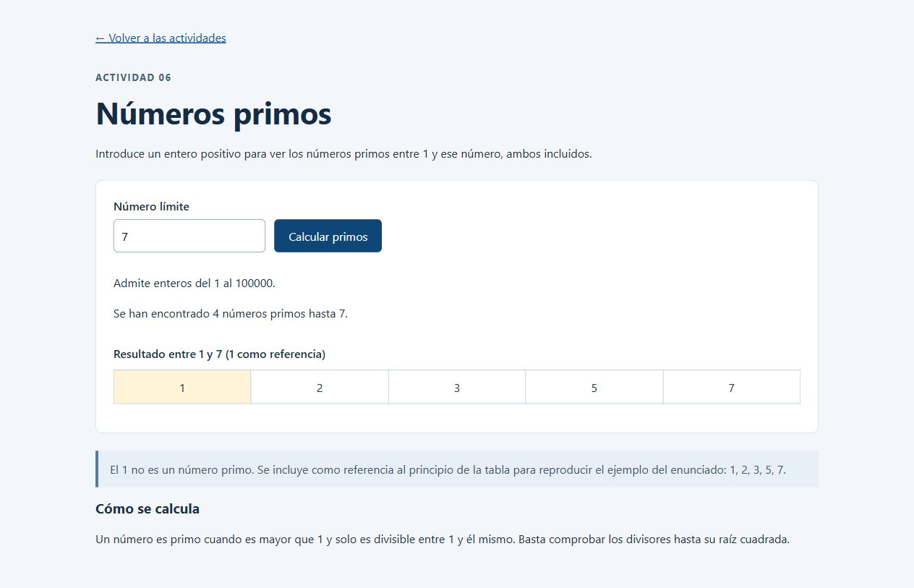
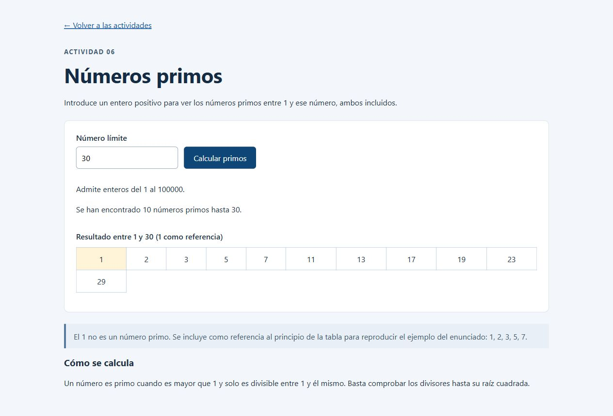
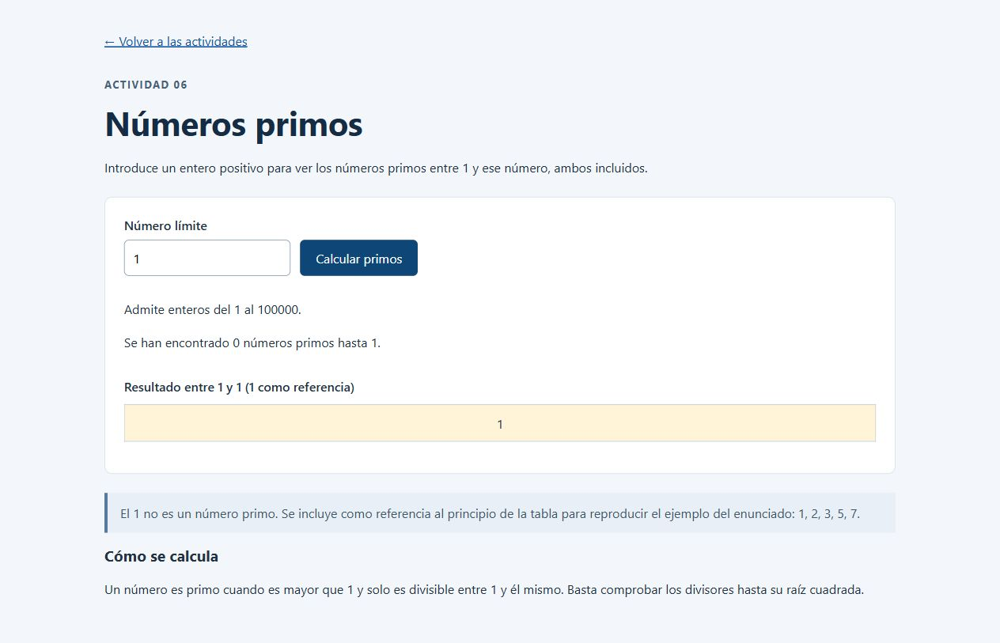
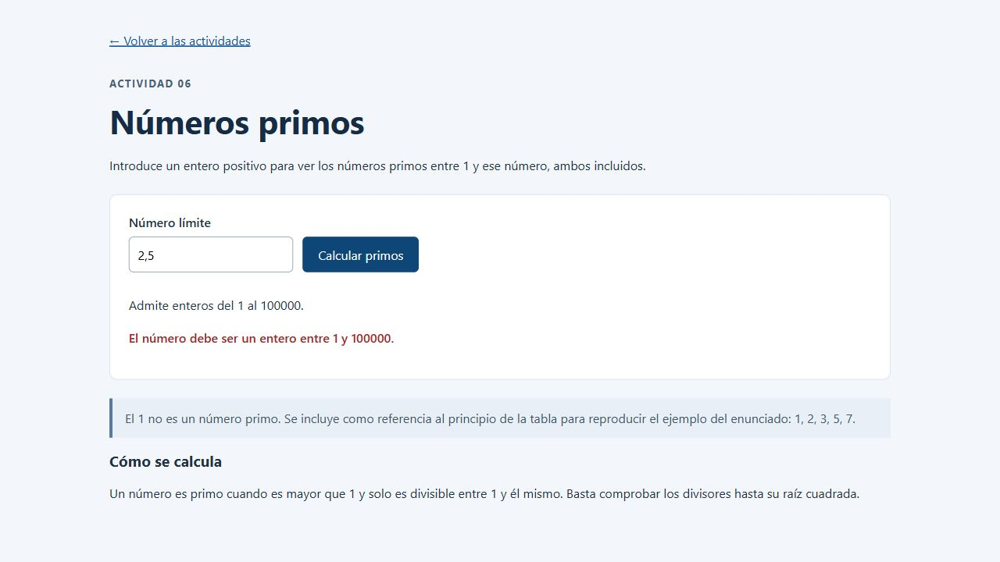

Práctica 3
Objetos predefinidos en JavaScript
Desarrollo Web en Entorno Cliente · 25 de octubre de 2026
La práctica contiene la lectura de atributos, enlaces externos con estilos, los dos bloques solicitados de freeCodeCamp, un conversor de morse y una tabla de números primos.
El código fuente y esta memoria están organizados dentro de la carpeta practica3 de la rama PRACTICA-3 del repositorio existente.
GitHub: https://github.com/guilhermenosey1010-dev/Plantilla_QEQ_DWEC_20260213/tree/PRACTICA-3/practica3
Vídeo local: demostracion.mp4. Incluye capturas del funcionamiento y explicación mediante subtítulos, sin narración de voz.
Enlace de YouTube: PENDIENTE DE PUBLICACIÓN. Para cerrar la entrega hay que publicar el vídeo como Oculto e incorporar su URL real a esta memoria. No se ha inventado un enlace.
1. Leer un atributo
Archivo: atributo.html. Se selecciona el elemento que contiene data-widget-name, se lee su valor con getAttribute y se muestra en el body con textContent.
Resultado comprobado: El valor de data-widget-name es: menu. Se conserva la solución original y se incorpora navegación común.

2 y 3. Enlaces externos
Archivos: enlaces.html y enlace-clase.html. querySelectorAll selecciona los enlaces cuyo href contiene ://. La primera versión cambia style.color y la segunda añade la clase externo, definida con color naranja en CSS.
Se comprobó que Wikipedia y freeCodeCamp tienen color rgb(255, 165, 0), mientras que el enlace relativo y el ancla local mantienen su color.


4. freeCodeCamp
Se han completado los dos bloques pedidos y comprobado el progreso real en la plataforma: Depuración, 12 de 12 retos; Scripting básico de algoritmos, 16 de 16 retos.
Los 28 archivos de solución están en freecodecamp/debugging y freecodecamp/basic-algorithm-scripting. Cada uno incluye el enlace a su reto. Todos superaron las pruebas de freeCodeCamp.
Se trabajaron errores de sintaxis, tipos, llamadas a funciones, índices y bucles; además de cadenas, factoriales, búsquedas, booleanos y manipulación de arreglos.

5. Texto a código morse
Archivos: morse.html y js/morse.js. El dato se solicita mediante window.prompt(). Si el navegador integrado no implementa ese método, se usa un diálogo HTML alternativo. Las capturas se obtuvieron en ese navegador integrado.
La detección es automática: una entrada formada solo por puntos, rayas y espacios se descodifica; el resto se convierte a morse. Se usa un objeto como diccionario y otro con la correspondencia inversa.
La tabla incluye A-Z, Ñ, CH, Ü, 0-9 y los signos de la referencia. La salida usa un espacio entre letras y dos entre palabras. Los espacios se conservan con white-space: pre-wrap.

5. Conversión inversa y validación
Al introducir ... --- ... se obtiene SOS. Se aceptan guiones de teclado y rayas largas, así como puntos normales o puntos medios.
Una entrada vacía, un carácter no admitido o una secuencia desconocida produce un aviso. Cancelar permite volver a empezar. Se usa textContent para mostrar el resultado como texto.

6. Números primos
Archivos: primos.html y js/primos.js. El límite se recoge con un input. Se valida que sea entero entre 1 y 100000, se comprueban los divisores hasta la raíz cuadrada y se construye una tabla en el body.
Con 7, la tabla contiene 1, 2, 3, 5 y 7. El 1 es una referencia para reproducir el ejemplo del PDF: no se considera primo y el contador muestra 4 primos. Con 30 se encuentran 10 primos.


6. Casos límite y comprobaciones
Con el límite 1 hay cero números primos. El valor 2.5, los negativos y el campo vacío muestran un aviso y retiran la tabla anterior.
Las pruebas automáticas comprueban ambos sentidos del morse, todos los signos de su tabla, los espacios entre palabras, los errores de entrada y los extremos del cálculo de primos. También se verificaron las páginas con interacciones reales del navegador.
Para repetir las pruebas desde la raíz del repositorio: node --test practica3/tests/algoritmos.test.js.
La carpeta entrega incluye el vídeo local y un guion para grabar una versión con tu voz. La publicación en YouTube y la incorporación de su enlace real siguen pendientes.

